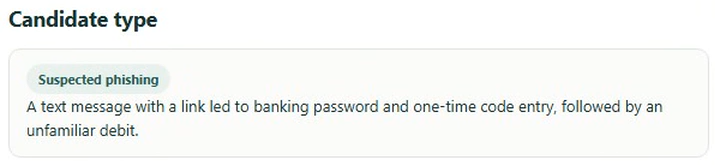
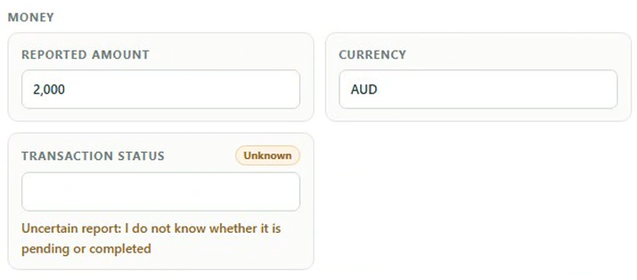
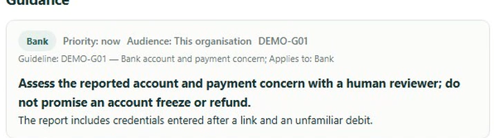
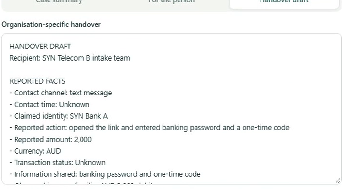
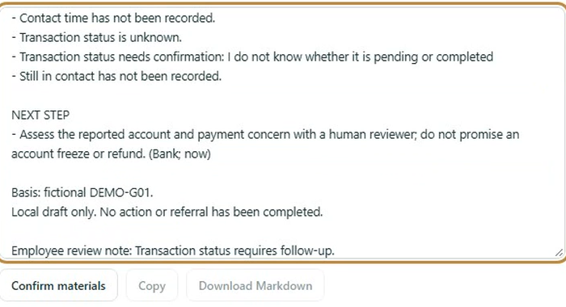
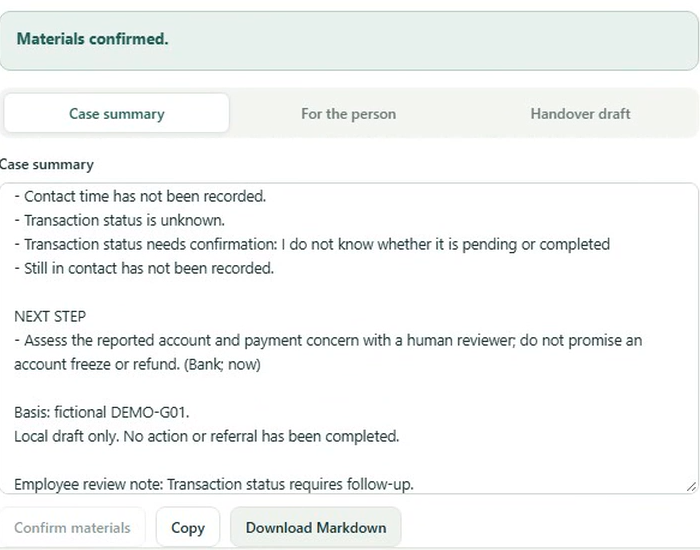

SCAMSAFE ALLIANCE · 一线接报辅助工作台
模型、程序与员工如何配合
面向银行与电信机构一线员工，协助整理案件、发现缺口，并准备建议与交接材料。
人类员工核对与决定
输入与核对
录入叙述、检查字段
补充更正、处理未知
判断与审核
核对建议、编辑材料
确认材料、决定后续
程序校验与状态管理
上下文与校验
组装案件、角色与指引
校验模型返回结构
同步状态与输出
维护字段、问题与草稿
管理确认、复制与下载
大语言模型理解与起草
理解与提取
理解叙述、整理事实
识别缺口、提出补问
建议与起草
结合角色和演示指引
组织建议与材料草稿
1提交叙述、回答或更正2提供当前上下文3返回分析与草稿4展示更新后的结果
人工参与贯穿信息核对、建议判断和材料审核，员工持续决定下一步。
成员 1 · 组成与协作原理 · 55 秒01 / 06
完整运行过程
原型演示
观察 01模型生成了
哪些内容
观察 02程序如何呈现
和管理结果
观察 03员工在哪里
核对与决定
英文 AI 配音 · 约 89 秒
案例与指引均为虚构
模型等待过程已在视频中缩短
案例与指引均为虚构
模型等待过程已在视频中缩短
成员 2 · 引导与承接 15 秒 + 视频约 89 秒02 / 06
视频解析 · 00:16–00:41.5
信息提取后的人工核对与补问
01 核对候选类型及其依据

02 对照叙述检查字段与缺口

员工选择如何继续补问
视频 00:31–00:41.5
视频 00:31–00:41.5
第一次分析后开始核对
金额和币种是否一致？
类型判断是否有叙述依据？
补充与更正
发现遗漏或错误时，
员工继续补充、核实和更正。
保留未知事项
视频中选择“不知道”，
交易状态继续保持未知。
人工持续参与信息核对／建议判断／材料确认
成员 3 · 信息核对与补问 · 50 秒03 / 06
视频解析 · 00:45 / 01:08
处理建议中的人工判断与机构协作
银行评估账户与付款担忧
建议标明机构、人工评估事项与演示指引

员工核对
是否符合案件信息与本机构职责？
是否需要专员或其他机构参与？
电信接收短信相关协助请求
员工检查交接原因、接收方及相关事实

嵌入接报流程 员工审核后，经认可渠道交接；机构采用前确认指引、权限与数据授权。
人工持续参与信息核对／建议判断／材料确认
成员 4 · 建议判断与机构协作 · 50 秒04 / 06
视频解析 · 01:12–01:29
材料编辑、确认与后续使用
01 补充人工跟进备注

“交易状态需要后续跟进”
从信息缺口进入待办说明。
02 确认后开放输出

员工检查
事实与待确认事项
表述与接收方
员工决定
编辑并确认材料
按机构流程使用
摘要保留案件信息
当事人说明支持沟通
交接稿支持机构衔接
人工持续参与信息核对／建议判断／材料确认
成员 5 · 材料审核与确认 · 45 秒05 / 06
原型评价
不足、局限与后续验证
| 局限所在 | 当前边界 | 后续验证 |
|---|---|---|
| 场景与指引覆盖 | 虚构案例与有限演示指引， 覆盖场景较少。 | 扩展诈骗类型、复杂案件 与无适用指引的情况。 |
| 模型结果可靠性 | 提取和建议可能出现遗漏、 错误或不适用的内容。 | 检查字段准确性、建议依据 与错误处理。 |
| 人工核对效果 | 依赖员工的经验、注意力 与对审核责任的理解。 | 观察能否发现错误， 评估草稿修改量。 |
| 机构落地与收益 | 真实机构流程衔接和 实际工作收益仍待验证。 | 受控试用，评估权限、交接、 字段遗漏与材料准备时间。 |
现有视频展示了一次案件处理流程，可靠性与实际工作收益仍需进一步评估。
成员 6 · 不足与局限 · 35 秒06 / 06